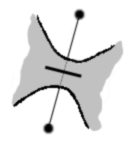

Zeichnungen anzufertigen ist ein Kinderspiel, und genau das machen Kinder, wenn sie ein Strichmännchen malen.
Zeichnungen anzufertigen ist ein Kinderspiel, und genau das machen Kinder, wenn sie ein Strichmännchen malen.
 Wie Sie jedoch sehen, ist der daraus resultierende Knoten nicht besonders attraktiv.
Wie Sie jedoch sehen, ist der daraus resultierende Knoten nicht besonders attraktiv.
Es stellt sich also die Frage, wie man zu ansprechenden Knoten und Flechtwerken kommt. Manche mögen den obigen Knoten als schön empfinden, und es ist ja auch alles Geschmackssache. In diesem Fall setzt Schönheit jedoch eine gewisse Regelmäßigkeit voraus. Am einfachsten ist es, ein Gitter als Grundlage zu nehmen. Es gibt viele Gitter und andere regelmäßige Muster in der Ebene. Ihnen ist eine ausgezeichnete Website gewidmet. Das quadratische Gitternetz ist das bekannteste, das ich nicht weiter darstellen werde. Dazu kommen das Dreiecks- und das Sechsecksgitter. Letzteres erhält man, indem man in einem Dreiecksgitter die Hälfte der Seiten entfernt (die richtige Hälfte!). Des weiteren sind diese beiden Gitter dadurch verbunden, dass das eine jeweils dual zum anderen ist. Weiter unten werden wir diesen mathematischen Begriff näher untersuchen und sehen, wozu wir ihn gebrauchen können.

Ein einfaches Gitter führt jedoch leider auch nur zu einem recht langweiligen Ergebnis:

Es gilt also, diese Regelmäßigkeit zu durchbrechen um eine schönere Wirkung zu erzielen. Dazu müssen manche Überkreuzungen einfach verhindert werden. Dies kann man auf zwei Weisen tun:
| Dies kann man auf zwei | Weisen tun:
 |
wird |
|  | oder |
 |
Wir haben jetzt also drei Arten von Seiten: die normalen, in deren Mitte sich die Fäden überkreuzen, und die beiden anderen, bei denen die Fäden jeweils zurücklaufen.
Diese Informationen werden wie folgt dargestellt: die eine mit einem dicken Strich senkrecht zur Seite, die andere durch Verdicken der Seite. Der Vollständigkeit halber brauchen wir eine vierte Form, und zwar für das Spiegelbild unserer Standard-Überkreuzung. Wir geben sie mit einer gestrichelten Linie wieder. Egal welche der beiden Überkreuzungen Sie bevorzugen, wichtig ist es die beiden nicht in einer Zeichnung zu mischen, außer man möchte einen bestimmten Effekt erzielen.
Denkt man in Labyrinth-Dimensionen, bedeutet das, eine Mauer in die Tür zu setzen, einmal quer zur Tür, einmal die Tür verschließend.


Am einfachsten ist es, mit leiterähnlichen Gittern auf Quadrat- oder Dreiecksbasis zu beginnen, in denen ein paar Mauern gleichmäßig verteilt sind. Die Ergebnisse der folgenden Aufgaben sollen nicht schön aussehen - dazu sind zu viele verschiedene Motive aneinander gereiht -, sondern Ihnen einen Fundus an Motiven bieten, jeweils 2-3 Quadrate lang, die es zu wiederholen gilt. Achtung: einige Seiten sind dicker als andere. Stellen Sie sicher, dass Sie diese gut unterscheiden.

Sie können sich die Lösungen ansehen oder gleich weiter zum nächsten Thema schreiten: Extraktion.